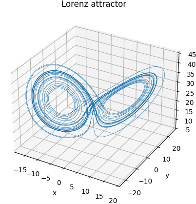
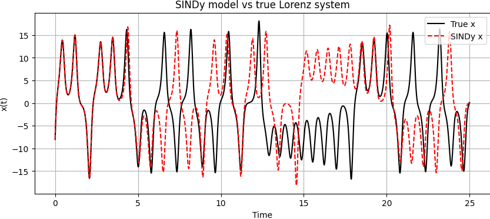
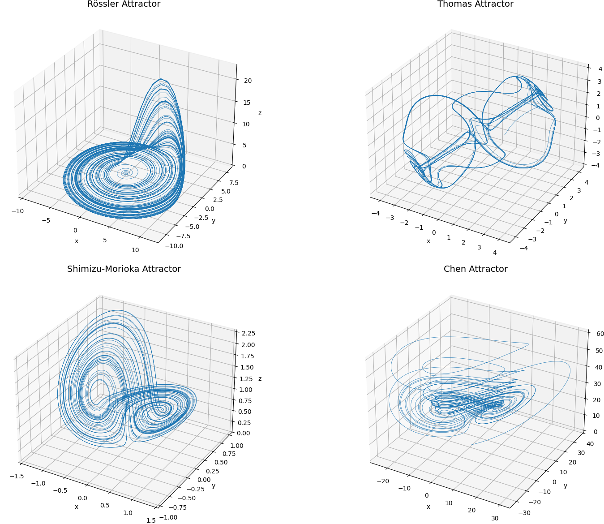
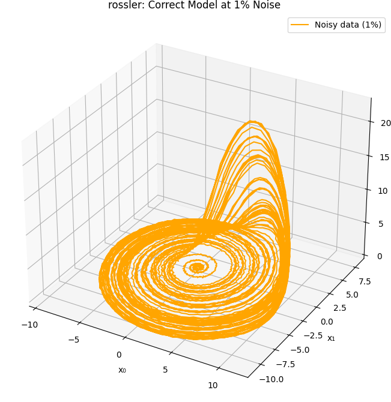
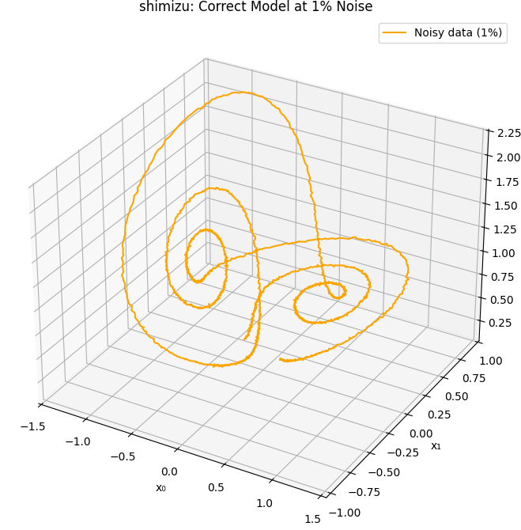

Learning Physics from Data: An Illustrated Guide to SINDy
Introduction to SINDy
The Sparse Identification of Nonlinear Dynamics (SINDy) is a modern data-driven method for discovering governing equations of dynamical systems directly from measurement data. Unlike traditional black-box approaches, SINDy aims to extract interpretable and parsimonious models that reflect the underlying physics or structure of a system.
Many real-world systems—ranging from climate models to fluid dynamics, neuroscience, and epidemiology—produce vast quantities of data, while their underlying equations remain unknown. SINDy addresses this challenge by assuming that the dynamics of these systems are governed by only a few key terms, even when considered in a high-dimensional nonlinear function space.
The method uses sparse regression to identify the fewest terms needed to describe the system's evolution over time. This leads to models that are both accurate and simple, avoiding the risk of overfitting. By doing so, SINDy bridges the gap between data science and traditional mathematical modeling.
In this project, we demonstrate how SINDy can be applied to various dynamical systems, starting with well-known examples like the Lorenz system and extending to multiscale systems. Our goal is to showcase the power of sparse modeling in uncovering the true structure of complex, nonlinear dynamics using only data.
Chapter 1: Discovering Differential Equations from Data using SINDy
Many systems in nature and engineering evolve over time in complex ways — from weather patterns and ecological populations to chemical reactions and robot motion. These systems are typically modeled by differential equations. But what if we don’t know the equations? What if we only have data — time-series measurements of how the system behaves?
This is the setting where the Sparse Identification of Nonlinear Dynamical Systems (SINDy) algorithm becomes powerful. SINDy is a technique for discovering governing equations from data, under the assumption that the underlying dynamics can be expressed by a small number of active terms from a larger set of possibilities. This sparsity assumption reflects the observation that real-world physical systems are often governed by simple laws — Newton’s laws, chemical kinetics, etc. — even if their behavior looks complicated.
Suppose we observe a system’s state \\( \mathbf{x}(t) \in \mathbb{R}^n \\) over time. The system evolves according to some unknown rule \\( \frac{d\mathbf{x}}{dt} = \mathbf{f}(\mathbf{x}) \\). Our goal is to recover the form of \\( \mathbf{f} \\) — ideally as an explicit set of differential equations — using only measurements of \\( \mathbf{x}(t) \\).
We begin by collecting a dataset \\( X \in \mathbb{R}^{m \times n} \\), where each row is a sample \\( \mathbf{x}(t_i) \\), and estimate the time derivatives \\( \dot{X} \in \mathbb{R}^{m \times n} \\) using finite differences. For example, if \\( n = 2 \\), and our variables are \\( x \\) and \\( y \\), a single row in \\( X \\) might be \\( [1.2, -0.5] \\), and its derivative \\( [0.8, 0.4] \\).
The key insight of SINDy is to model each time derivative \\( \dot{x}_i \\) as a sparse linear combination of nonlinear functions of the state — polynomials, trigonometric functions, or others. To formalize this, we construct a function library \\( \Theta(X) \\), which contains columns like:
[1, x, y, x^2, xy, y^2]
Let’s see this concretely. Suppose \\( x = 2 \\) and \\( y = -1 \\), then: \[ \Theta([x, y]) = [1, 2, -1, 4, -2, 1] \] Each of these terms could be part of the true governing equation. So we assume: \[ \dot{\mathbf{x}} = \Theta(X) \cdot \Xi \] where \\( \Xi \in \mathbb{R}^{p \times n} \\) is a coefficient matrix we want to identify. Each column in \\( \Xi \\) represents the active terms for one variable’s time derivative. Most of \\( \Xi \\)’s entries should be zero if the true system is sparse.
To recover \\( \Xi \\), we solve a sparse regression problem. One efficient and simple method is the STLSQ algorithm (Sequential Thresholded Least Squares), which alternates between fitting a standard linear model and removing small coefficients. Here's how it works in Python:
def STLSQ(Theta, dXdt, threshold=0.1, max_iter=10):
Xi = np.linalg.lstsq(Theta, dXdt, rcond=None)[0]
for _ in range(max_iter):
small = np.abs(Xi) < threshold
Xi[small] = 0
for i in range(dXdt.shape[1]):
big = ~small[:, i]
if np.any(big):
Xi[big, i] = np.linalg.lstsq(Theta[:, big], dXdt[:, i], rcond=None)[0]
return Xi
This algorithm allows us to find a sparse \\( \Xi \\), which leads directly to symbolic differential equations. Now let’s apply the method to the famous Lorenz system, defined by:
\[ \begin{aligned} \frac{dx}{dt} &= 10(y - x) \\ \frac{dy}{dt} &= x(28 - z) - y \\ \frac{dz}{dt} &= xy - \frac{8}{3}z \end{aligned} \] We simulate this system numerically to generate our data \\( X \\), and then build \\( \Theta(X) \\) using polynomial terms up to degree 2. This includes terms like \\( x, y, z, x^2, xy, xz, y^2, yz, z^2 \\). We compute \\( \dot{X} \\) numerically, and apply STLSQ to fit \\( \Xi \\).
The resulting discovered model might look like this:
(x0)' = -10.003 x0 + 10.003 x1
(x1)' = 27.804 x0 - 0.953 x1 - 0.994 x0 x2
(x2)' = -2.667 x2 + 0.999 x0 x1
These are impressively close to the true Lorenz equations, even though the model was discovered purely from data.
The following plot shows the original Lorenz attractor generated by integrating the true system:
We then simulate the discovered SINDy model using the learned coefficients, and compare its trajectory to the original system:
At first, the trajectories match very closely. Over time, they diverge — this is not a failure, but a natural result of the system’s chaos. Chaotic systems are extremely sensitive to initial conditions and parameters. What matters is that the discovered model reproduces the global behavior: the strange attractor, the structure, and the correct terms in the governing equations.
Chapter 2: Comparing Four Nonlinear Dynamical Systems
In this chapter, we examine four classical nonlinear systems, each exhibiting different types of dynamical behavior. These systems — Lorenz, Rössler, Thomas, and Chen — are defined by autonomous differential equations in three variables, and serve as prototypical examples of chaos and complex attractors.
The goal is to understand and compare their behavior using geometric, numerical, and algorithmic perspectives. One key analytical tool we use is the largest Lyapunov exponent, \\( \lambda_1 \\), which measures how sensitive the system is to initial conditions — the higher the exponent, the more chaotic the system.
Additionally, we analyze the ability of the SINDy algorithm to recover each system’s governing equations. This requires building an appropriate feature library \\( \Theta(X) \\). Most systems can be well-approximated using a polynomial library, but others — like the Thomas system — demand special functional terms, such as trigonometric functions.
Lorenz System
With standard parameters \\( \sigma = 10, \rho = 28, \beta = 8/3 \\), the Lorenz system exhibits strong chaos (\\( \lambda_1 \approx 0.905 \\)). The system has a double-lobed strange attractor and produces rapidly diverging but bounded trajectories.
SINDy Recovered Model:
(x0)' = -10.003 x0 + 10.003 x1
(x1)' = 27.804 x0 - 0.953 x1 - 0.994 x0 x2
(x2)' = -2.667 x2 + 0.999 x0 x1
Rössler System
The Rössler system (\\( a = 0.2, b = 0.2, c = 5.7 \\)) has milder chaotic behavior (\\( \lambda_1 \approx 0.07 \\)) and produces a single-scroll attractor. Its geometry is mostly planar with a slow spiraling out in the z-direction.
SINDy Recovered Model:
(x0)' = -0.999 x1 + -0.995 x2
(x1)' = 0.999 x0 + 0.200 x1
(x2)' = 0.196 1 + -5.610 x2 + 0.985 x0 x2
Thomas System
The Thomas cyclic system, often run with \\( b = 0.18 \\), behaves quite differently. It has a looped attractor and low-to-moderate chaos (\\( \lambda_1 \approx 0.16 \\)). Its dynamics are fundamentally based on trigonometric nonlinearity — making it invisible to SINDy if only polynomial terms are used.
Attempting to recover Thomas using a standard polynomial library results in complete failure. The STLSQ optimizer returns zero coefficients and raises a warning:
(x0)' = 0.000
(x1)' = 0.000
(x2)' = 0.000
# Warning: Sparsity parameter is too big (0.1) and eliminated all coefficients
The reason is that the true dynamics depend on \\( \sin(x_i) \\), which is entirely missing from a polynomial library. To successfully model the Thomas system, we must explicitly include sinusoidal terms in \\( \Theta(X) \\), such as \\( \sin(x), \sin(y), \sin(z) \\). When we do so, the correct model is identified:
(x0)' = -0.190 x0 + 1.001 sin(x1)
(x1)' = -0.190 x1 + 1.001 sin(x2)
(x2)' = -0.190 x2 + 1.001 sin(x0)
This highlights a crucial insight: the success of SINDy critically depends on choosing a function library that is expressive enough to contain the true system structure. The Thomas system serves as a clear example of a mismatch between library and system.
Chen System
The Chen system (\\( a = 35, b = 3, c = 28 \\)) is structurally similar to the Lorenz system but more chaotic (\\( \lambda_1 \approx 2.0 \\)). It produces a stretched, complex attractor with rapid divergence of nearby states. The SINDy algorithm performs well under the right library settings:
(x0)' = -34.996 x0 + 34.997 x1
(x1)' = -7.041 x0 + 27.915 x1 + -0.993 x0 x2
(x2)' = 0.520 1 + -3.031 x2 + 0.998 x0 x1
Summary of Dynamical and SINDy Behavior
| System | Lyapunov Exponent (λ₁) | Chaos Strength | Attractor Type | Library Type Needed | SINDy Recovery |
|---|---|---|---|---|---|
| Lorenz | ≈ 0.905 | Strong | Double-lobed | Polynomial (deg 2) | Excellent |
| Rössler | ≈ 0.07 | Mild | Spiral | Polynomial (deg 2) | Good |
| Thomas | ≈ 0.16 | Weak | Toroidal | Trig. + Poly | Fails without sin(x) |
| Chen | ≈ 2.0 | Very Strong | Irregular chaotic | Polynomial (deg 2) | Very Good |
The contrast between the systems emphasizes the importance of choosing the right functional basis when applying sparse identification methods like SINDy. While polynomial libraries are effective for Lorenz, Rössler, and Chen, they are inadequate for systems like Thomas, whose dynamics lie outside the polynomial span.
Below is a composite visualization comparing the phase space trajectories of all four systems:
In the next chapter, we will explore how data quality (e.g., sampling rate or noise level) affects the ability of SINDy to recover these systems — particularly the more sensitive or weakly chaotic ones like Thomas and Rössler.
Chapter 3: How Much Data Is Enough? Subsampling and Model Recovery
One of the central practical questions when using SINDy is how much data is required to identify the correct model structure. Real-world systems are rarely measured with unlimited precision and density, so understanding the trade-off between sampling resolution and model fidelity is crucial.
To investigate this, we apply a systematic subsampling procedure. Starting from full-resolution simulations, we reduce the number of time points used to fit the model. For each reduced dataset, a SINDy model is trained using either a polynomial library or a combination of polynomial and trigonometric terms. We compare the resulting model's term structure to the ground truth: if all active terms match exactly, the structure is considered correct. We also compute the relative error in the coefficient values when applicable.
The results vary substantially across systems:
Rössler System (Polynomial Library)
With 10000 and 5000 data points, the correct structure is recovered, and the coefficient deviation remains low (1.52% and 6.38% respectively). However, below 1000 points, structural recovery fails entirely. This suggests that for moderately chaotic systems like Rössler, a threshold of around 5000 samples is needed for accurate recovery using standard polynomial features.
Rössler System (Trigonometric + Polynomial Library)
Adding trigonometric functions to the library does not improve recovery for Rössler. The same thresholds apply, indicating that the underlying dynamics are well captured by polynomials alone and that additional basis terms are unnecessary or redundant in this case.
Thomas System (Trigonometric + Polynomial Library)
The Thomas system is structurally dependent on sine interactions, and polynomial-only libraries fail to capture its dynamics. When trigonometric terms are included, the model is correctly identified with as few as 500 samples, and remains robust even at 1000 and 500 points. Only at 200 points and below does the structure degrade. This highlights the importance of including appropriate nonlinearities in the function library, especially when the true system is not polynomial in nature.
Shimizu-Morioka System (Polynomial Library)
The Shimizu-Morioka system is correctly recovered using a polynomial library with 5000 points or more. Below this threshold, the model fails to identify the correct terms. Introducing trigonometric terms in this case harms performance, suggesting that these additional features introduce unnecessary variance or aliasing, masking the sparse structure of the true system.
Chen System
The Chen system cannot be identified correctly in any tested configuration — not with 10000 points, nor with either library type. The recovered models are structurally incorrect across all sampling levels. This suggests that the Chen system either lies outside the expressiveness of the current library functions or is particularly sensitive to sampling and noise, possibly due to its highly nonlinear and stiff dynamics. Its coefficient scales and interactions may require adaptive thresholds, weighted fitting, or entirely different identification strategies.
This experiment demonstrates that the success of model discovery depends not only on the amount of data available, but on the compatibility between the chosen library and the system’s true dynamics. Even with thousands of samples, incorrect library choice renders recovery impossible. Meanwhile, well-matched libraries can uncover sparse governing equations from surprisingly little data.
Chapter 4: Discovering Models Under Noise
Real-world measurements are never noise-free. Sensor errors, external disturbances, and system variability all contribute to noise in data, which can obscure the true underlying dynamics. For sparse model discovery methods like SINDy, which rely on accurate estimation of derivatives and term sparsity, this presents a major challenge.
To investigate how noise affects model identification, we performed a series of controlled experiments on two systems: the Rössler and the Shimizu-Morioka systems. These systems were chosen because they are structurally distinct, yet both were successfully recovered in noiseless scenarios under appropriate sampling conditions.
The experimental approach is as follows. For each system, we simulate a trajectory using standard parameters and initial conditions, producing a clean dataset. We then iteratively add Gaussian noise at increasing levels — measured as a percentage of the signal’s standard deviation — and attempt to fit a SINDy model to the noisy data. For each noise level, we evaluate whether the model structure (i.e., the location of nonzero coefficients) still matches the known true model. Once the structure fails to match, we stop and record the last successful noise level.
The goal is to determine the maximum level of noise that still allows successful recovery of the correct dynamical model. For this experiment, we tested noise levels from 1% up to 80%, and used a fixed feature library: a third-degree polynomial library with all interaction terms.
Rössler System
The Rössler system was able to tolerate up to 1% additive noise before the SINDy model failed to identify the correct structure. Beyond this, spurious terms began to appear or key terms disappeared, indicating that even small noise levels introduce significant distortion in the derivative estimates or regression stability.
This low tolerance suggests that systems with mild chaotic behavior and smooth vector fields — like Rössler — are particularly sensitive to noise during sparse regression. Small deviations in the data lead to incorrect active term selection, likely due to changes in feature correlation and coefficient magnitudes near the threshold cutoff.
Shimizu-Morioka System
The Shimizu system, although nonlinear and containing multiplicative terms, also tolerated up to 1% noise. Like Rössler, the model failed immediately beyond this point. Interestingly, the system appears to degrade sharply — there is no gradual increase in coefficient error, only a sudden failure in term identification.
This behavior suggests that, for the library and optimizer used, SINDy behaves like a threshold detector: either the true model is captured exactly, or it is not captured at all. There is limited robustness to small deviations, especially when no additional regularization or noise filtering is used.
From these findings, we conclude that SINDy is highly sensitive to noise — even small amounts can lead to incorrect model recovery. Accurate numerical differentiation and possibly denoising or smoothing preprocessing are essential if the method is to be applied to real, noisy data. Furthermore, the system’s structure and the distribution of its nonlinear terms strongly influence how resilient it is to corruption.
References
- Brunton, S. L., Proctor, J. L., & Kutz, J. N. (2016). Discovering governing equations from data by sparse identification of nonlinear dynamical systems. PNAS, 113(15), 3932–3937. DOI
- Kaheman, K., Kutz, J. N., & Brunton, S. L. (2022). SINDy sampling strategies. arXiv:2202.11638. Link
- De Silva, B. M., Champion, K., & Brunton, S. L. (2020). Multiscale modeling of dynamical systems using sparse identification. Phys. Rev. E, 101(1), 013311. DOI
- Kaptanoglu, A. A., et al. (2022). PySINDy: A Python package for sparse identification of nonlinear dynamical systems. JOSS, 7(76), 4596. DOI
- PySINDy GitHub: https://github.com/dynamicslab/pysindy